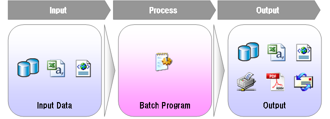

アプリケーション構成
プロジェクト構成
bathoryでは、SAStrutsやTeedaと同様にルートパッケージの配下にcollector,consumerなどのパッケージを作り、必要なファイルを格納します。 ルートパッケージ名は、任意の名前を指定することができます。 例えば、bathory-examplesプロジェクトでは、ルートパッケージ名は、examples.bathoryになっています。
ルートパッケージ名は、convention.diconで指定します。 bathory-examplesプロジェクトでは、src/main/resourcesで次のように指定されています。
<?xml version="1.0" encoding="UTF-8"?> <!DOCTYPE components PUBLIC "-//SEASAR//DTD S2Container 2.4//EN" "http://www.seasar.org/dtd/components24.dtd"> <components> <component class="org.seasar.framework.convention.impl.NamingConventionImpl"> <initMethod name="addRootPackageName"> <arg>"examples.bathory"</arg> </initMethod> </component> </components>
このルートパッケージ以下に、ControllerやConsumerを作成します。
アプリケーションアーキテクチャ
bathoryは、Producer-Consumerパターンに基づいたアーキテクチャを採用しています。 bathory中では、Producerに当たる部分をCollector、Consumerにあたる部分をConsumer、CollectorとConsumerのデータ受け渡しはCasketと呼んでいます。 以下にbathoryのアプリケーションアーキテクチャを説明します。
一般的なバッチアプリケーションは、以下のような構造になります。
- データベースやファイル（CSV/XML）ファイルを入力情報として取得
- 入力情報に対し、業務処理を実行
- データベースやファイル（CSV/XML）メールや帳票に対して処理結果を出力
bathoryでは、このようなバッチアプリケーション構築時の雛形を提供します。
このうち、入力に関する処理をCollectorに記述し、業務処理・出力に関する処理をConsumerに記述します。 データは直接受け渡しせず、Casketという入れ物クラス経由で受け渡しを行います。 bathoryでは、このCollectorとConsumerを作成することでバッチアプリケーションを構築していきます。
Collector
バッチアプリケーションの中で、データ収集を司るクラスをCollectorといいます。 Collectorの役割は、データベースやファイルを読み込み、Casketというクラスへデータを引き渡すことです。
Collectorクラスは、以下のような規約でクラス名を付与します。
| 規約 | 説明 | |
| 1 | パッケージ名 | ルートパッケージ名.collector ルートパッケージ名の詳細はこちらを参照してください。 |
| 2 | クラス名 |
|
| 3 | 実装すべきインタフェース | org.seasar.bathory.engine.Collector 必要に応じて、org.seasar.bathory.engine.BatchLifecycleListener BatchLifecycleListenerの詳細はこちらを参照してください。 |
S2DaoやS2JDBCでの検索結果が収集データとして利用可能な場合、収集処理を容易に記述するためのユーティリティクラスを用意しています。
| 収集元 | 使用する機能 | クラス | |
| 1 | S2Dao | FetchHandler | org.seasar.bathory.extentions.s2dao.FetchHandlerAdapter |
| 2 | S2JDBC | IterationCallback | org.seasar.bathory.extentions.s2jdbc.IterationCallbackAdapter |
CSVファイルやXMLファイルに関してのユーティリティクラスは今後拡充予定です。
Consumer
バッチアプリケーションの中で、業務処理や出力処理を司るクラスをConsumerといいます。 Consumerの役割は、Collectorが収集した一件分のデータに対して業務処理・出力処理を行います。
Consumerクラスは、以下のような規約でクラス名を付与します。
| 規約 | 説明 | |
| 1 | パッケージ名 | ルートパッケージ名.consumer ルートパッケージ名の詳細はこちらを参照してください。 |
| 2 | クラス名 | 対応するCollectorのクラス名のCollectorをConsumerに変更します。 |
| 3 | 実装すべきインタフェース | org.seasar.bathory.engine.Consumer 必要に応じて、org.seasar.bathory.engine.BatchLifecycleListener BatchLifecycleListenerの詳細はこちらを参照してください。 |
業務処理が長くなるようであれば、ServiceクラスやLogicクラスに切り出してください。 Teedaのページクラスのようなクラスだと理解してくれるとわかりやすいと思います。
初期化・終了処理
バッチアプリケーションを構築する際、ファイルのオープン・クローズなど、処理開始・終了時に一回のみ行いたい処理がある場合があります。 その場合は、CollectorもしくはConsumerにBatchLifecycleListenerを実装してください。
public class TestConsumer implements Consumer, BatchLifecycleListener {
/** Writerを格納するキー名. */
private static final String WRITER = "Writer";
/**
* 初期化処理.
*/
@Override
public void initilize() {
BathoryContext context = BathoryContext.getCurrentInstance();
try {
Writer writer = new BufferedWriter(new FileWriter("/path/to/file.csv"));
} catch (IOException e) {
throw new SystemException(e);
}
context.getProperties().put(WRITER, writer);
}
@Override
public void consume() {
// BathoryContextの取得
BathoryContext context = BathoryContext.getCurrentInstance();
Writer writer = (Writer) context.getProperties().get(WRITER);
// writerへの書き込み処理
}
/**
* 終了時処理.
*/
@Override
public void terminate() {
// BathoryContextの取得
BathoryContext context = BathoryContext.getCurrentInstance();
Writer writer = (Writer) context.getProperties().get(WRITER);
// writerのclose
try {
writer.flush();
writer.close();
} catch (IOException e) {
throw new SystemException(e);
}
}
}
初期化・終了処理は、Collector,Consumerそれぞれに記述可能です。 特に大きな理由がないのであれば、以下のようなルールで記述することをお勧めします。 ファイルへのアクセスがデータ取得時なら、Collectorに、データ処理時ならConsumerに記述すると読みやすいと思います。
Casket
データの受け渡しを行うためのクラスです。 Collectorにて取得したデータを受け取り、Consumerへ引渡しをします。
バッチは大規模なデータを扱うことが多いため、大量にメモリを消費してしまう可能性があります。 そのため、Casketでは、一定件数以上のデータがメモリ上に展開されないようになっています。 Casketのデータ保持件数のデフォルト値と変更方法についてはバッチアプリケーション設定情報を参照。